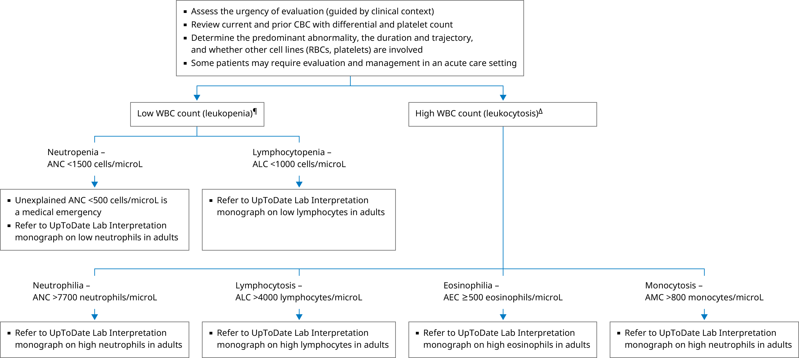

AEC: absolute eosinophil count; ALC: absolute lymphocyte count; AMC: absolute monocyte count; ANC: absolute neutrophil count; CBC: complete blood count; RBC: red blood cell; WBC: white blood cell.
* The normal range for the WBC count is 4400 to 11,000 cells/microL in most clinical laboratories. The WBC differential reports percentages of different WBC subtypes (ie, percentages of neutrophils, lymphocytes, eosinophils, monocytes, and basophils). For clinical application, if not reported by the laboratory, percentages should be converted to absolute numbers by multiplying the percentage of WBC subtype by the total WBC count. Interpretation of a specific abnormal result should be based on the reference range reported with that result.
¶ Leukopenia is almost always due to a decrease in neutrophils. The degree of leukopenia influences the urgency of evaluation and the need for hematologic and/or infectious disease consultation.
Δ Leukocytosis is most commonly due to an increase in neutrophils. However, leukocytosis may also be due to increased monocytes, eosinophils, basophils, and/or lymphocytes.